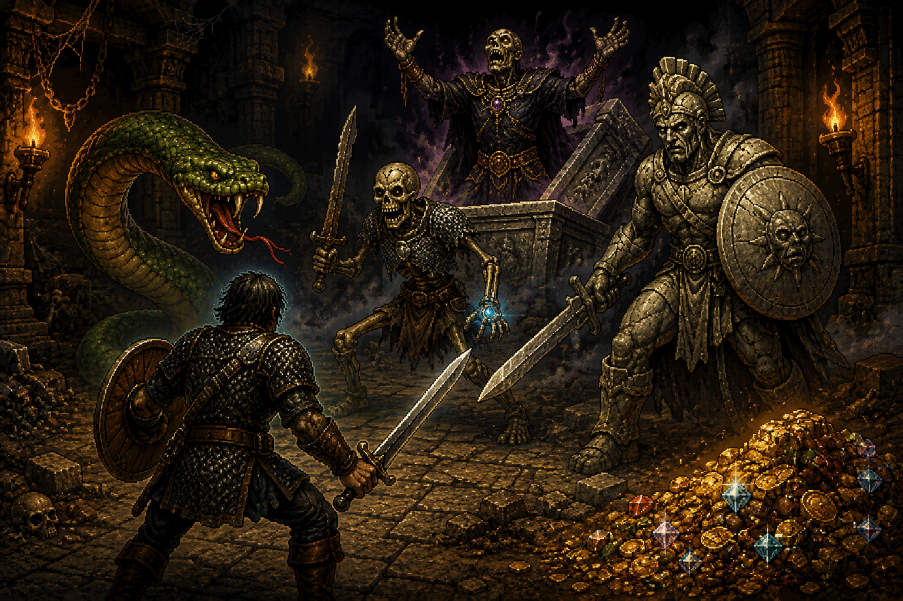

Mes jeux
- Reticuli
- Accessible Arena Strike
- Vous êtes ici : Le tertre fistule
- Metropolis (à venir)

Présentation du jeu
Le tertre fistule est un jeu vidéo sonore au tour par tour, jouable au clavier, avec une ambiance d'exploration de donjon.
Le système reprend, sous une forme allégée, les règles de Pathfinder 1 pour un guerrier pouvant atteindre le niveau 6. Des adversaires devront être combattus, des objets ramassés, une porte à briser et quelques fonctionnalités cachées peuvent rapporter de nombreux points d'expérience, utiles pour combattre le boss final.
Le projet met l’accent sur les sons, la stéréo, les annonces vocales et une interface graphique synthétique, afin de proposer une expérience accessible aussi bien aux joueurs voyants que non-voyants.
Lien itch.io
Mode d'emploi
Dans l'écran de jeu
- Flèches directionnelles (haut, bas, gauche, droite) : déplacement du personnage, avec changement de salle si possible.
- Tab : sélectionner un élément dans la salle, joueur compris.
- Entrée : interagir avec l'élément sélectionné (ramasser un objet, ouvrir la fiche de personnage, combattre un monstre, forcer une porte, prendre la sortie).
- D : décrit vocalement l'élément sélectionné.
- O : ouvre les options sonores.
- Échap : quitte la fiche de personnage et les options sonores.
Dans l'écran des options sonores
- Flèches haut / bas : changer de paramètre.
- Flèches gauche / droite : modifier le paramètre sélectionné.
- Entrée sur "valider" : valide les modifications.
- Entrée sur "annuler" ou Échap : quitte les options sonores sans effectuer de modifications.
Chronologie
- Lundi 20 juillet 2026 à 22 h 11 : fin du projet « Le tertre fistule ».
- Dimanche 20 septembre 2026 à 05 h 26 : brouillon en vue de sa publication sur itch.io.
- Jeudi 8 octobre 2026 à 09 h 44 : projet publié sur itch.io.